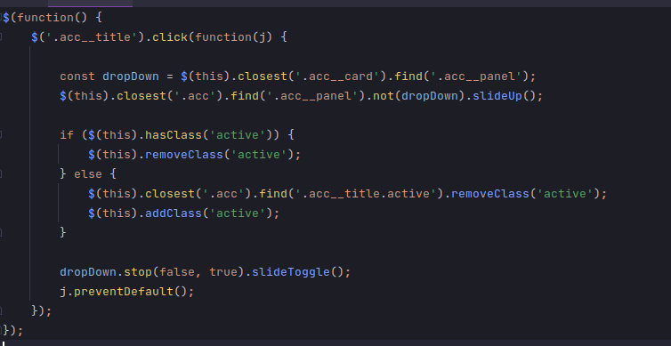
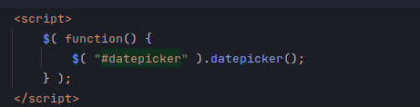
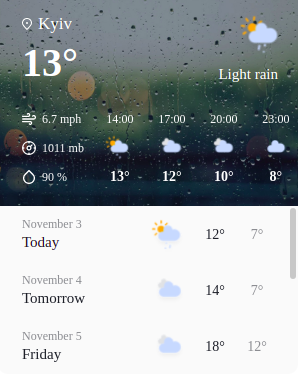
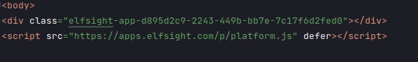
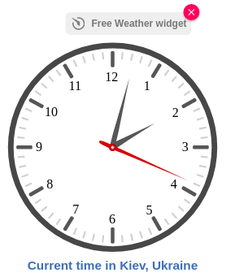
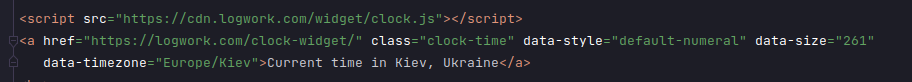
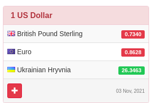
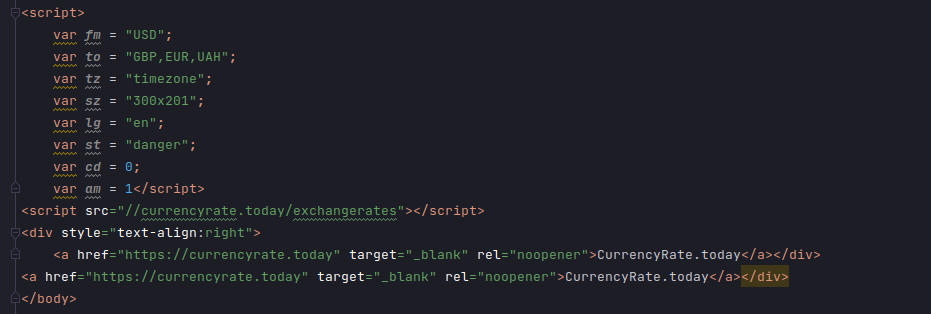

Тема лабораторної роботи:
Використання в сценаріях JavaScript бібліотек крос-браузерних
інтерфейсів методів DOM. Бібліотека JQUERY UI.
Засоби налагодження і тестування сценаріїв JavaScript.
Мета:
Придбати практичні навички роботи jQuery UI,
вміти додавати до сайту динамічні елементи цієї
бібліотеки, плагін галереї UniteGallery,
кнопки соціальних мереж, інформери та інше.


Для цього пункту ми не використовували додаткових бібліотек,
а використовували відкритий код з сайтів.
Погода в Києві


Годинник


Курс валют


Висновки:
У цій лабораторній роботі ми працювали з бібліотекою JQuery UI,
додали певні динамічні елементи,використовували модулі для мультимедіа.